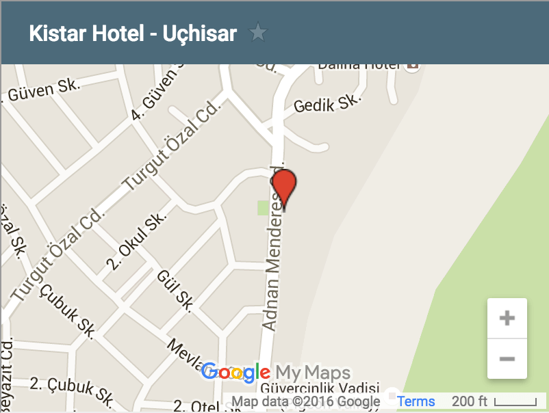

Hoşgeldiniz
Merhabalar,
Düğün tatilimizde yanımızda olacağınız için çok mutluyuz, çok teşekkür ederiz. Biz 31 Mayıs Salı günü itibariye Kapadokya'da olacağız, sizleri de düğün öncesinde istediğiniz gün bekleriz.:) Kapadokya tatilinizin çok güzel geçmesi için bizim en sevdiğimiz ve etkilendiğimiz noktalardan sizler için program önerisi hazırladık. Müthiş bir tatil olsun, iyi ki geliyorsunuz, iyi ki yanımızdasınız...
Düğün
ÖN KOKTEYL
3 Haziran, Cuma
19:00 - Wine & Cheese party
 Les Maisons de Cappadoce, Belediye Meydani No:6, Uchisar
Harita icin tiklayin.
(0384) 219 2813
Les Maisons de Cappadoce, Belediye Meydani No:6, Uchisar
Harita icin tiklayin.
(0384) 219 2813
SERAMONİ
4 Haziran, Cumartesi
19:00 - Kokteyl & Düğün Yemeği
21:00 - Eski Bando Muzik Grubu Canlı Performans
01:00 - DJ Elcin Ozsoy ile after party
 Maara Konak, Museum Hotel'in 50m ilerisindedir.
Museum Hotel, Tekelli mah. No.1 Uçhisar
Harita icin tiklayin.
(0384) 219 2220
http://www.museum-hotel.com/
Maara Konak, Museum Hotel'in 50m ilerisindedir.
Museum Hotel, Tekelli mah. No.1 Uçhisar
Harita icin tiklayin.
(0384) 219 2220
http://www.museum-hotel.com/
* Düğüne smart casual giyinebilirsiniz.
Aktivite Programı
Salı-Perşembe
31 Mayıs, Salı
12:00 Ihlara Vadisi ve Derinkuyu yeraltı şehri
Ihlara vadisinde yürüyüş parkurunda 3-4 saat vakit geçirmenizi öneririz. Vadi içerisinde çok fazla kilise yer
almaktadır; en önemlileri: Yılanlı, Ağaç Altı, Sümbüllü, Kırk Dam Altı Kiliseleri. Melendiz çayında mola verilip, buz gibi suda yorgunluğunuzu atabilirsiniz.
Derinkuyu yeraltı şehri: Dünyanın 9. harikası olarak literatüre geçmiş bu yeraltı şehri Hıristiyanlığın ilk
zamanlarında hem saklanma hem de gizli ibadet yeri olarak kullanılmış. 8 kattan oluşan bu şehri mutlaka görmeniz gerekir. Klostrofobisi olanlara önermiyoruz :)
Günün geri kalanında Ürgüp bölgesindeki eskiciler ve Turasan şarap mahzeni gezilebilir.
19:00 Ziggy'de yemek.
Ahmet Tevfik Cad.
No. 24 Urgup
Tel: 0 (384) 341 7107
1 Haziran, Çarşamba
10:00 Avanos turu - Avanos seramik müzesi ve seramik mağazaları
Avanos bölgenin en önemli sanat ve turizm merkezidir. Taş köprüden geçerek merkeze inilebilir; doğal güzelliklerle çevrili şehir merkezi yürüyüş yolunda Avanos evlerini görebilir ve doğa yürüyüşünün tadını çıkartabilirsiniz. Avanos yakınlarındaki Zelve açık hava müzesini de görmenizi öneririz.
Seramik mağazaları gezilebilir. (İkizler seramik)
17:00 ATV Turu @ Aşk Vadisi
19:00 Aşk vadisinde gün batımı pikniği ( Turasan'dan alınan şarap eşliğinde :) )
2 Haziran, Perşembe
12:00 Göreme Açık Hava Müzesi
18:00 Drink @ Sacred House
Barbaros Hayrettin Sk. No:25, Ürgüp
(0384) 341 71 02
20:00 Akşam Yemeği @ Muti
Ürgüp Merkez,
(0)384 341 58 08
Cuma - Pazar
3 Haziran, Cuma
05:00-07:00 Balon'la Kapadokya'yı tepeden görebilirsiniz.
17:00 Üçgüzeller Ziyareti @ Uçhisar
19:00 - Wine & Cheese party @ Les Maisons de Cappadoce, Uçhisar
4 Haziran, Cumartesi
13:00 Cemal's Ranch @ Ortahisar, Ürgüp
At binmeye ve hafif bir öğlen yemeğine gidilebilir.
19:00 - Kokteyl & Düğün Yemeği @ Maara Konak, Uçhisar
21:00 - Eski Bando Muzik Grubu Canlı Performans
01:00 - DJ Elcin Ozsoy ile after party
5 Haziran, Pazar
12.00 - Kahvaltı @ Les Maisons de Cappadoce, Uçhisar
Konaklama
OTELLER
Les Maisons De Cappodoce
(Ana otel, Cuma 19:00'da kokteyl burda olacak.)
Belediye Meydanı No:6,
Uçhisar, Nevşehir
http://cappadoce.com/
(0384) 219 2813
-
Pacha Hotel (Ana otelden 19km uzaklıkta, araba ile 23 dak)
Kara Sokak, Mustafapaşa,
Ürgüp, Nevşehir
Pacha Otel Websitesi
(0384) 353 53 31
Kistar Hotel (Ana otelden 250m uzaklıkta)
Aşağı Mahalle, Adnan Menderes Caddesi No:5
Uçhisar, Nevşehir
Kistar Otel websitesi
(0384) 219 33 25

Nasıl Gidilir?
ARABA ile
Uçhisar kasabası, Nevşehir ve Göreme Yolu üzerinde 7 Km.'de bulunan bir ilçe. Eğer otobüsle gitmek isterseniz pek çok firmanın direkt olarak Nevşehir’e seferleri mevcut. Buradan şehir içi ulaşımı kullanarak Uçhisar’a ulaşmanız mümkün.
- Kayseri Uçhisar arası yaklaşık 80 kilometre(km) mesafede ve araçla yaklaşık 1 saat 10 dakika kadar sürmekte.
- İstanbul Uçhisar arası yaklaşık 753 kilometre(km) mesafede ve araçla yaklaşık 8 saat 40 dakika kadar sürmekte.
- Ankara Uçhisar arası yaklaşık 301 kilometre(km) mesafede ve araçla yaklaşık 3 saat 40 dakika kadar sürmekte.
HAVAALANINDAN (taksi ya da araba ile)
Nevşehir-Kapadokya Havalimanın'dan Uçhisar kasabası 37 km mesafede ve araçla yaklaşık 35 dakika sürmekte.
Nevşehir-Kapadokya Havalimanından taksiyle Uçhisar yaklaşık 180TL ($60) tutmakta.
* Yandex ile yol tarifi için tıklayın
* Google Maps ile yol tarifi için tıklayın:

-
Kayseri Havalimanı'ndan Uçhisar kasabası 81 km mesafede ve araçla yaklaşık 1 saat 10 dakika sürmekte.
Kayseri Havalimanı'ndan taksiyle Uçhisar yaklaşık 130TL ($42) tutmakta.
* Yandex ile yol tarifi için tıklayın
* Google Maps ile yol tarifi için tıklayın:
Uçhisar
UÇHİSAR TARİHİ
Uçhisar Kalesi, Kapadokya’nın zirve noktasıdır. Kapadokya’nın her yerinden görülen en büyük ve en güzel peri bacasıdır. Kalenin zirvesi Kapadokya’nın kuş bakışı görüleceği tek yerdir.
Uçhisar Evleri’nin geçmişi M.Ö. 2000’li yıllara kadar uzanır. İlk evler kayadan oyma yapılmış ve sığınma ve korunma amaçlı kullanılmıştır. Daha sonraları yatay ve düşey olarak kayalar oyulmuş ve çok geniş mekanlar oluşturulmuştur. Osmanlı Dönemi’nde de bu yapılarda yaşanmıştır. 15. yüzyılda kayadan oyma yapılara, yığma binalar eklenmiştir. Yerleşim yerlerinde yaşayan halkın geçim kaynakları değiştikçe evlerin de yapıları değişmiştir. 18. -19. yüzyıllar arasında eskiye göre daha büyük yapılar ve hatta konaklar inşa edilmiştir. Evler genellikle yamaçlara yapılmıştır. Evlerde genellikle iç ve dış avlu bulunur. Ön cepheleri de az ya da çok süslemelidir. Günümüzde bu eski evlerin çoğu restore edilmiş ve butik otel olarak kullanılmaktadır. Az sayıda da olsa beldenin bazı yerlerinde hala eski evler bulunmaktadır